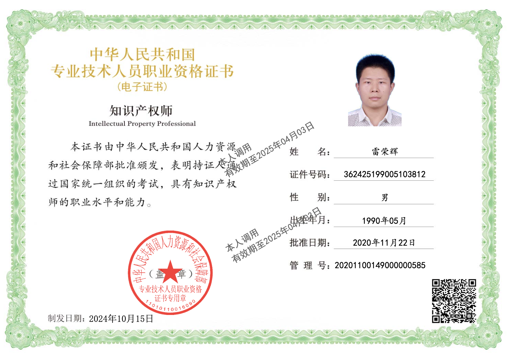
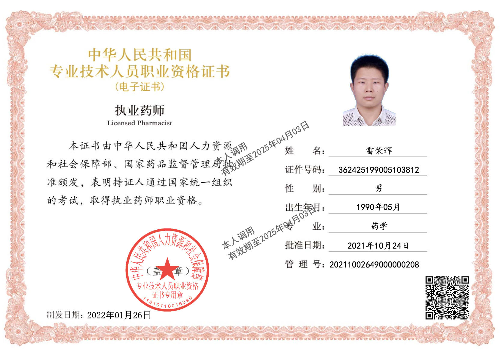
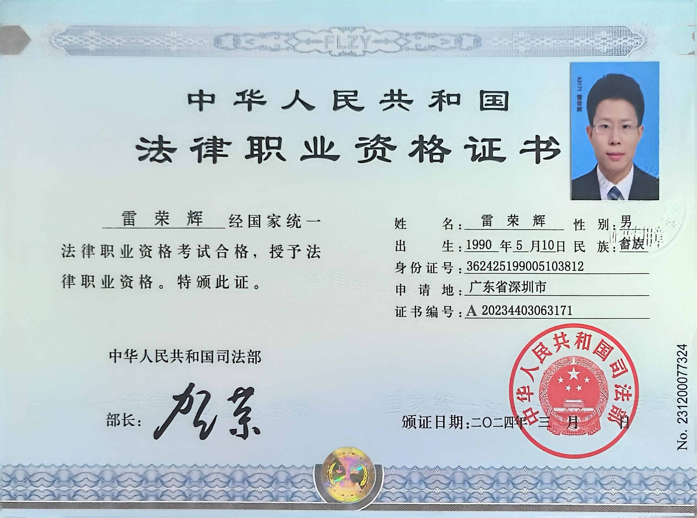
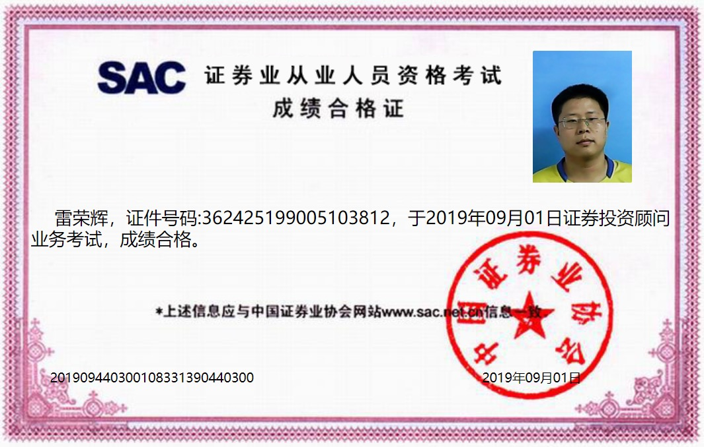

先判断公司能不能处理你的问题，再决定要不要继续往下谈。
- 陌生客户先看公司当前到底卖什么，不先看长履历。
- 两条业务线都在同一张页面里切换，不让你来回跳转。
- 如果值得继续，直接把问题、预算和联系方式交给公司安排跟进。
我们当前公开处理两类问题：一类是生物医药与功能产品项目里的 FTO、研发引导、代工 / CDMO 筛选与实业 IP； 另一类是投资组合管理，并以香港功能地产为当前主要标的。公司接单，公司统筹，公司交付。
一条业务线处理医药项目与实业 IP 问题，一条业务线处理投资组合管理问题。 前者重点看 FTO、研发引导、合作边界、代工 / CDMO；后者重点看资产路径、进入逻辑、持有纪律与香港功能地产。
因为这家公司不是把问题拆成零散文书，而是先做关键判断，再决定后面的法律、知识产权、项目推进或资产动作怎么进入。
由公司统一承接、统一分流，不把客户丢进各自为战的碎片服务里。
先判断，再推进；先把最容易出错的环节收紧，再进入后续动作。
适合想先买判断、再决定是否继续投入的人，而不是只想听一句空泛建议的人。
当前由 shedatahk limited 团队统一承接业务。负责人 / 董事代表负责关键判断与项目把关， 公司真正可用的底盘来自药学与研发沟通、专利与法律判断、财税与资产视角，以及工程与项目推进能力。
公开首页不堆长履历；只保留和成交、尽调、业务判断直接相关的材料。更完整的文件、证书与合作资料，在进入下一阶段时再按需提供。

负责人负责优先级排序、边界把关与最终取舍，不把复杂问题交给模板化处理。

适合和研发、工艺、功能产品、成果转化与代工 / CDMO 团队讲同一种项目语言。

适合处理 FTO、权利归属、合作边界、侵权风险与关键谈判场景。

适合把资产路径、现金流、执行顺序与长期纪律放进同一套判断框架里看。
这条线适合生物医药、功能产品、成果转化、代工或系列产品开发团队。 如果你当前最担心的是 FTO、研发方向、代工 / CDMO、合作边界或成果归属，这条线就是先入口。
适合项目初期到推进中期，需要先把自由实施、规避路径和研发顺序收紧的人。
不是先出一堆文件，而是先判断最容易出事的点，再安排法律、知产和项目动作的先后顺序。
后续可以继续进入专利律师、高级知识产权、成果转化与长期推进支持，但先把判断做对。
这条线面向关注资产路径、配置纪律与长期判断的人。香港功能地产是当下重点标的， 但公司真正处理的，是你现在到底该不该做、该怎样做、以及这件事在你的组合里承担什么角色。
适合想先买判断服务、先看进入逻辑和资产路径，再决定要不要继续看具体对象的人。
重点不是把你推进某个标的，而是先看这项物业在你的组合里到底承担什么角色。
如果值得继续，公司再进入香港功能地产判断、路径梳理与持续陪跑，而不是先堆一大套术语。